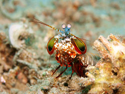
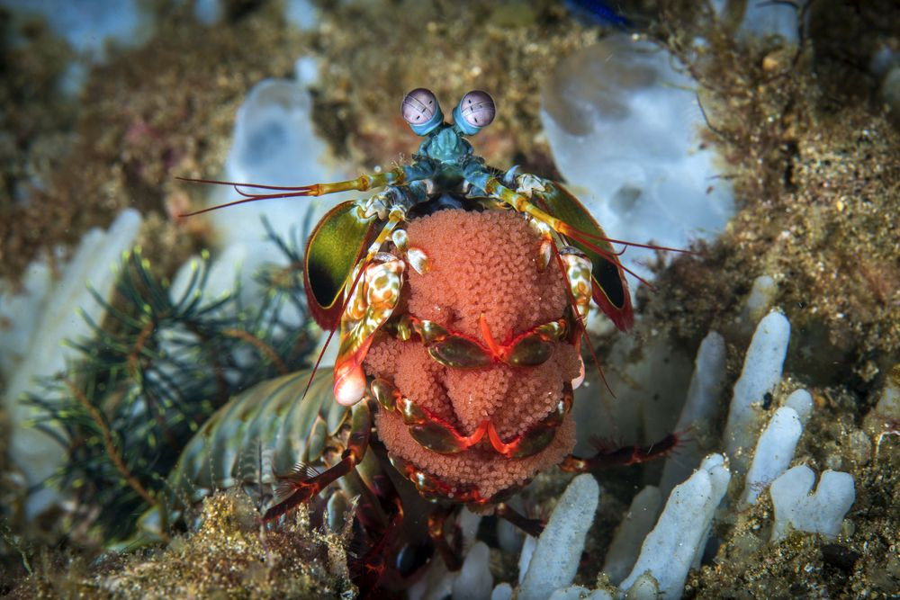
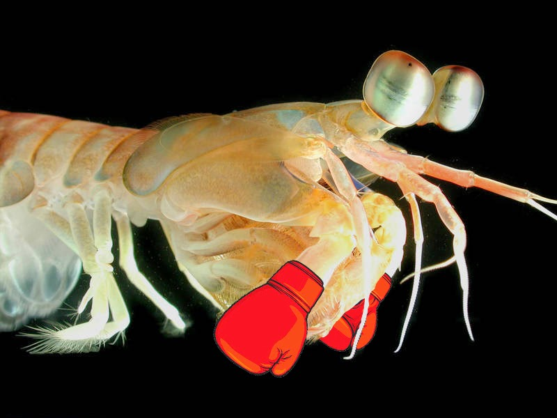
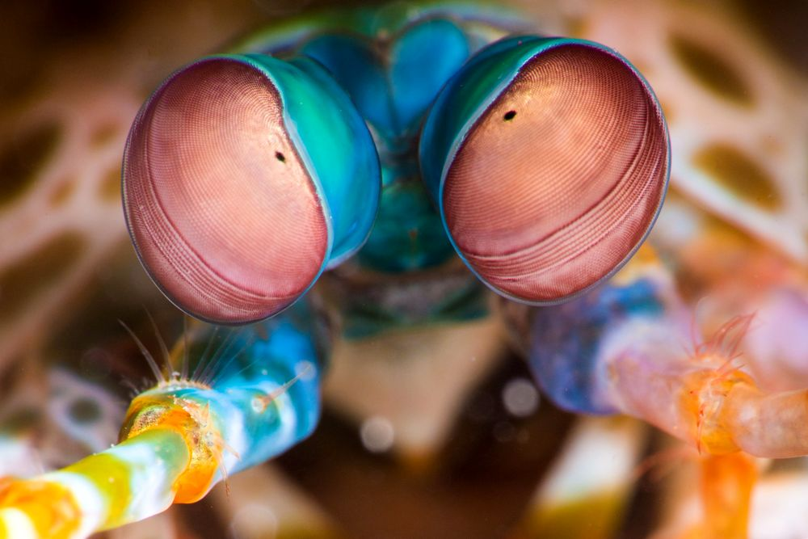

Fatos sobre o Stomatopoda
Informações Gerais
Stomatopoda (ou estomatópode), chamados popularmente de tamarutacas ou de lacraias-do-mar no Brasil, é uma ordem de crustáceos marinhos da subclasse Hoplocarida, que agrupa cerca de 400 espécies, caracterizadas principalmente pela morfologia da segunda pata torácica, que é modificada em apêndice subquelado, lembrando uma pata de louva-a-deus. Seu nome científico é Odontodactylus scyllarus e ele habita águas tropicais e subtropicais. Pertencente ao Reino Animalia, este animal pra lá de intrigante é de origem marinha e está classificado no filo Arthropoda e subfilo Crustacea. Sua classe é Malacostraca e sua subclasse é a Hoplocarida. Como seu nome popular anuncia, ele é da ordem Stomatopoda e foi taxado inicialmente por Pierre André Latreille.
Reprodução e Ciclo de Vida
Em média, um camarão mantis (pertencente ao grupo dos Stomatopoda) vive 20 anos. Durante sua vida útil, pode produzir de 20 a 30 vezes. Em algumas espécies, a única interação entre machos e fêmeas ocorre durante o acasalamento. A fêmea põe ovos em sua toca ou os carrega consigo. Em outras espécies, os camarões acasalam em relacionamentos monogâmicos e ao longo da vida, com ambos os sexos cuidando dos ovos. Após a eclosão, os filhotes passam três meses como zooplâncton antes de se transformarem na forma adulta. Na imagem acima vemos um camarão de mantis do pavão que leva sua fita do ovo
Soco Fatal
As maiores esmagadoras, tais como exemplares de Odontodactylus scyllarus, são capazes de desferir um dos mais rápidos e violentos golpes do reino animal, um soco que pode apresentar a velocidade de um tiro calibre . 22 (equivalente a 720 km/h) e uma pressão de impacto de 600 N/cm².
Super-visão
Os estomatópodes são predadores ativos que caçam presas com o auxílio de um sentido de visão muito apurado e capaz de interpretar polarização no espectro ultravioleta e infravermelho. O sistema de visão dos estomatópodes possui doze cones sensíveis à luz e outros quatro que filtram a luz (16 cones no total), o que lhes permite ver cores polarizadas e imagens multiespectrais. Como cada cone pode ver cerca de 100 cores, os estomatópodes são capazes de ver 1024 cores, ou seja, 1 septilhão de cores.
Fontes
https://pt.wikipedia.org/wiki/Stomatopoda
https://mz.figgysfoodtruck.com/2076-mantis-shrimp-facts-stomatopoda.html
http://queridacorujacuriosa.blogspot.com/2014/09/super-soco.html